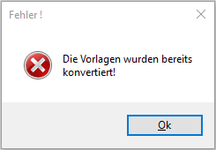
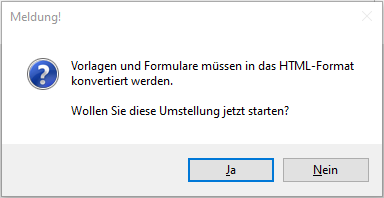
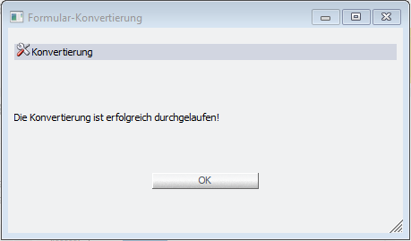

Über den Menüpunkt
1 WinLine INFO
1 SMART
1 FORM
1 Konvertierung
können "indiv. Vorlagen" und "CRM-Formulare" (Fallansichten) konvertiert werden, damit diese anschließend als HTML-Vorlagen verwendet werden können.
Hinweis
Neu angelegte Formulare und indiv. Vorlagen liegen automatisch in der korrekten Form vor und müssen nicht über diesen Menüpunkt konvertiert werden.
Sind keine Vorlagen/Formulare mehr vorhanden, die konvertiert werden müssen, erscheint die folgende Meldung:

Sind noch Formulare und Vorlagen vorhanden, die konvertiert werden müssen, wird die folgende Meldung ausgegeben:

Wird die Meldung mit "Ja" bestätigt, startet der Konvertierungsprozess. Dabei wird ein Fenster am Bildschrim angzeigt, in dem eine Fortschrittsanzeige für den Benutzer ersichtlich ist, d. h. wie viele Vorlagen/Formulare insgesamt umgestellt werden und welche Vorlage bzw. welches Formular sich aktuell im Zugriff befindet.
Zudem ist der Button "Abbruch" enthalten. Wird dieser geklickt, wird die Konvertierung gestoppt und das Fenster kann anschließend geschlossen werden.
Hinweis
Wurden bereits Vorlagen konvertiert, bevor der Button "Abbruch" geklickt wurde, dann werden die bereits konvertierten Vorlagen nicht wieder zurückgesetzt und sind somit bereits umgestellt/konvertiert.
Wurden alle Formulare und Vorlagen erfolgreich konvertiert, erscheint die folgende Meldung, die mit "OK" bestätigt werden kann:
